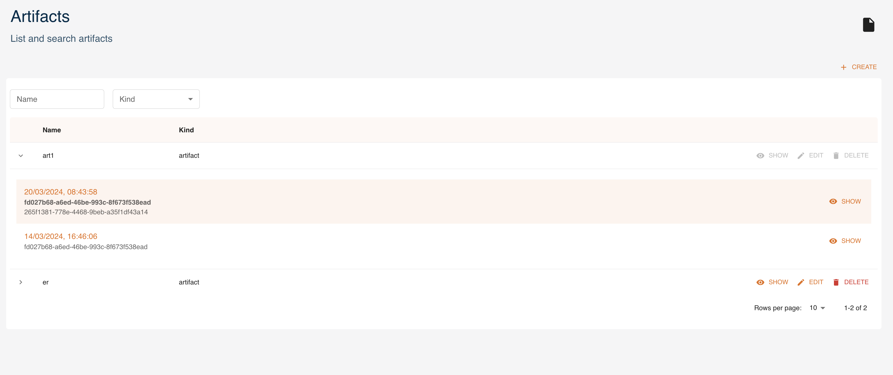
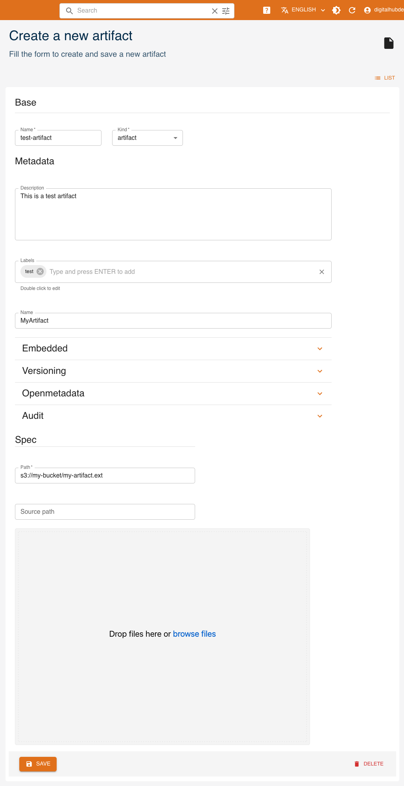
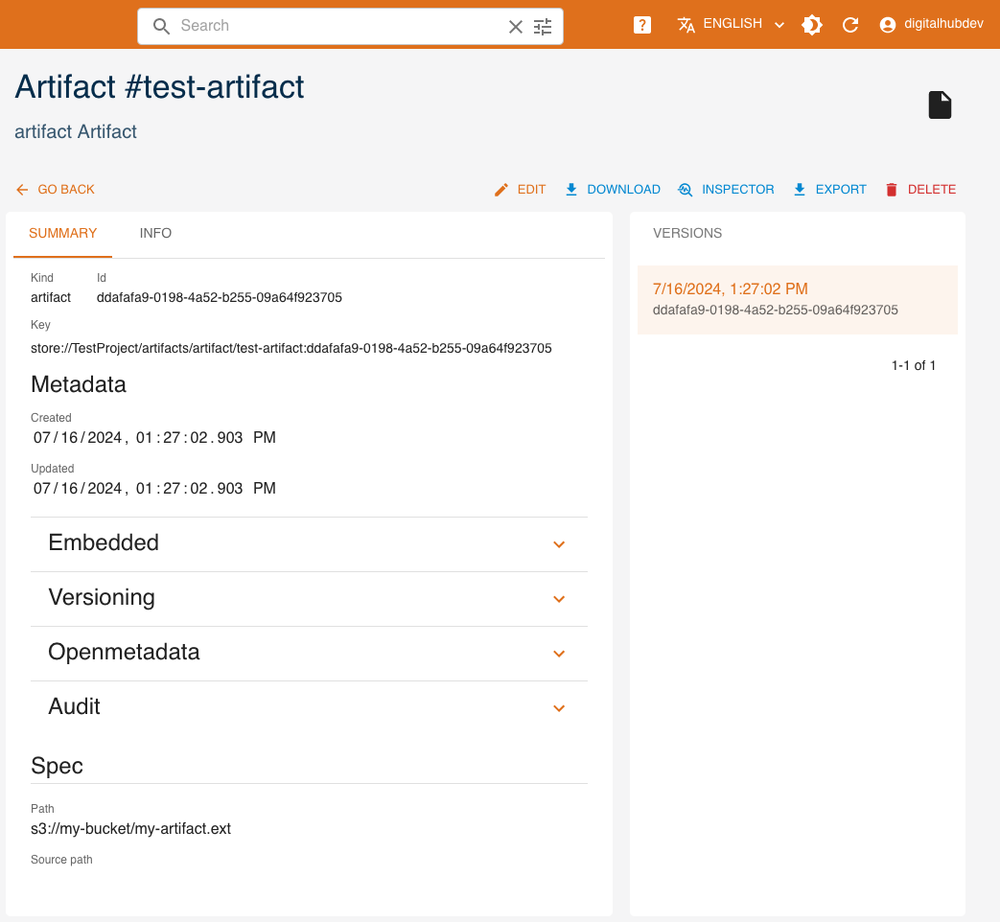
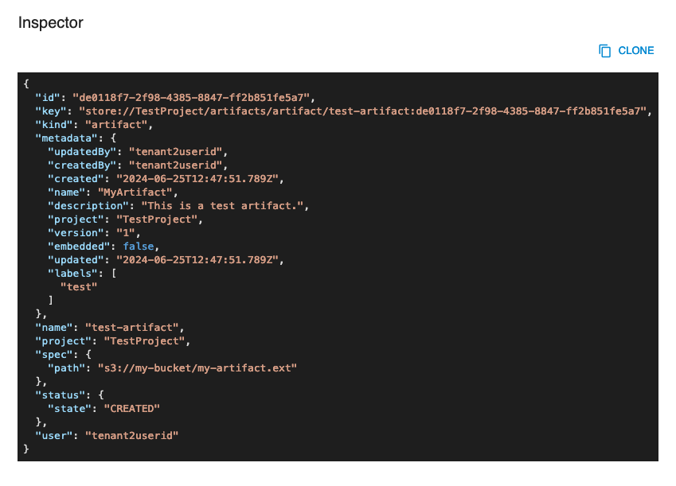
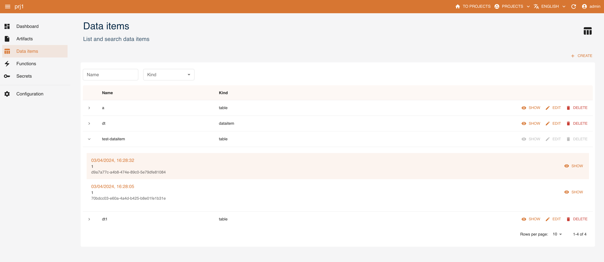
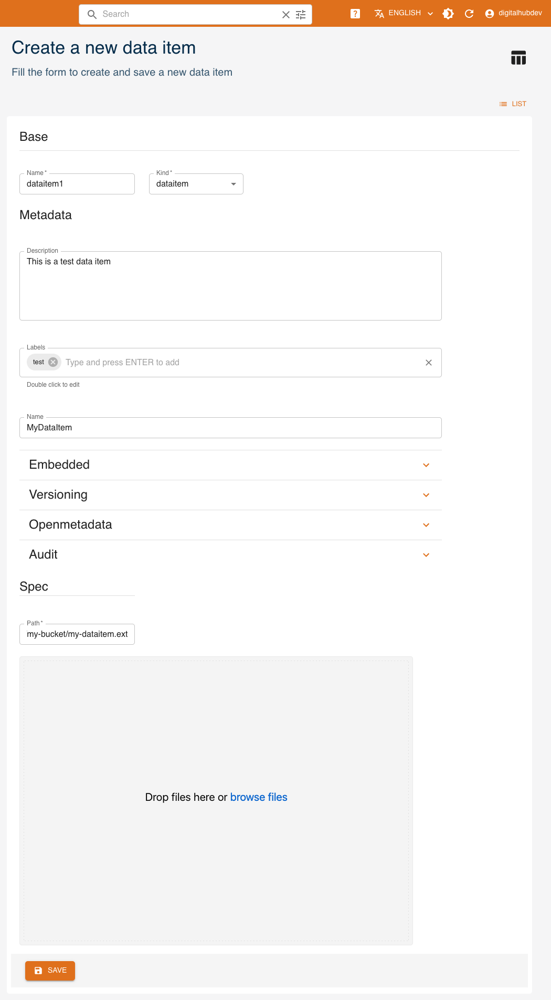
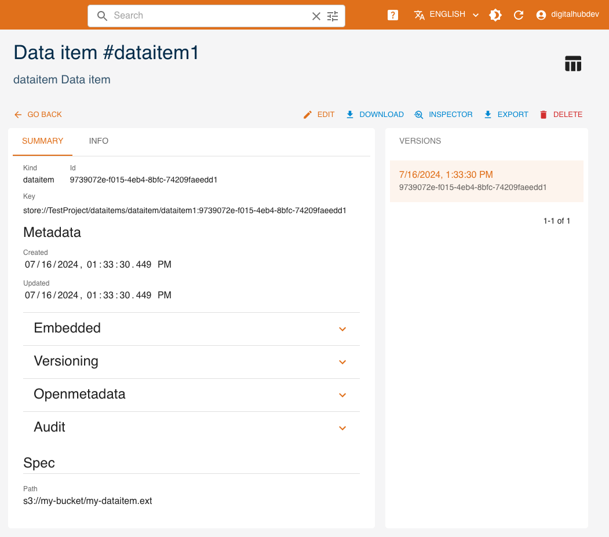
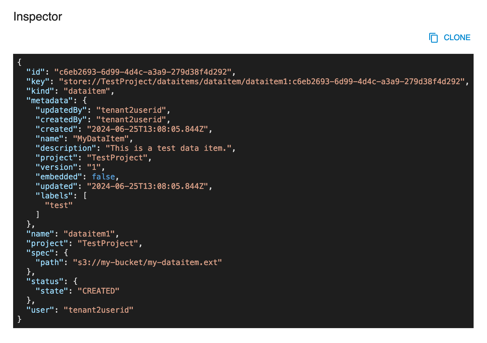

Data and transformations
The platform supports data of different types to be stored and operated by the underlying storage subsystems.
Specifically, the platform natively supports two types of storages:
- persistence object storage (datalake S3 Minio), which manages immutable data in the form of files.
- operational relational data storage (PostgreSQL database), which is used for efficient querying of mutable data. Postgres is rich with extensions, most notably for geo-spatial and time-series data.
The data is represented in the platform as entities of different types, depending on its usage and format. More specifically, we distinguish:
- data items, which represent immutable data sets resulting from different transformation operations and are ready for use in differerent types of analysis. Data items are enriched with metadata (versions, lineage, stats, profiling, schema, ...) and unique keys and managed and persisted to the datalake directly by the platform in the form of Parquet files. It is possible to treat tabular data (items of
tablekind) as, for example, DataFrames, using conventional libraries. - artifacts, which represent arbitrary files, not limited to tabular format, stored to the datalake with some extra metadata.
Each data entity may be accessed and manipulated by the platform via UI or using the API, for example with SDK.
Management via UI
Artifacts
Artifacts can be managed as entities from the UI. You can access them from the dashboard or the left menu. You can:
createa new artifactfilterartifacts by name and kindexpandan artifact to see its 5 latest versionsshowthe details of an artifacteditan artifactdeletean artifact

Here we analyze how to create, read, update and delete artifacts using the UI, similarly to what can be done through the SDK.
Create
Click CREATE and a form will be shown:

Mandatory fields are:
Name: name and identifier of the artifactKind: kind of the artifact- (Spec)
Path: remote path where the artifact is stored. If you instead upload the artifact at the bottom of the form, this will be the path to where it will be stored.
Other fields are optional and may be updated later.
- (Metadata)
Description: a human-readable description of the artifact - (Metadata)
Labels: list of labels - (Metadata)
Name: name of the artifact - (Metadata)
Embedded: flag for embedded metadata - (Metadata)
Versioning: version of the function - (Metadata)
Openmetadata: flag to publish metadata - (Metadata)
Audit: author of creation and modification - (Spec)
Source path: local path to the artifact, used in case of upload into remote storage
Read
Click SHOW to view an artifact's details.

On the right side, all versions of the resource are listed, with the current one highlighted. By clicking a different version, values displayed will change accordingly.
The INSPECTOR button will show a dialog containing the resource in JSON format.

The EXPORT button will download the resource's information as a yaml file.
Update
You can update an artifact by clicking EDIT. Greyed-out fields may not be updated.
Delete
You can delete an artifact from either its detail page or the list of artifacts, by clicking DELETE.
Data items
Data items can be created and managed as entities with the console. You can access them from the dashboard or the left menu. You can:
createa new data itemexpanda data item and see its 5 latest versionsshowthe details of a data itemedita data itemdeletea data itemfilterdata items by name and kind

Here we analyze how to create, read, update and delete data items using the UI, similarly to what can be done through the SDK.
Create
Click CREATE and a form will be shown:

Mandatory fields are:
Name: name of the dataitemKind: kind of the dataitem- (Spec)
Path: remote path where the data item is stored. If you instead upload the data item at the bottom of the form, this will be the path to where it will be stored.
Other fields are optional and may be updated later:
- (Metadata)
Description: a human-readable description - (Metadata)
Labels: list of labels - (Metadata)
Name: name of the data item - (Metadata)
Embedded: flag for embedded metadata - (Metadata)
Versioning: version of the function - (Metadata)
Openmetadata: flag to publish metadata - (Metadata)
Audit: author of creation and modification - (Spec)
Source path: local path of the data item, used in case of upload into remote storage
Kind
There are 2 possible kinds for dataitems:
Dataitem: indicates it is a generic data item. There are no specific attributes in the creation page.table: indicates that the data item points to a table. The optional parameter is the schema of the table in table_schema format.
Read
Click SHOW to view a data item's details.

Based on the kind, there may be a schema, indicating that the dataitem point to a table.
On the right side, all versions of the resource are listed, with the current one highlighted. By clicking a different version, values displayed will change accordingly.
The INSPECTOR button will show a dialog containing the resource in JSON format.

The EXPORT button will download the resource's information as a yaml file.
Update
You can update a data item by clicking EDIT. Greyed-out fields may not be updated.
Delete
You can delete a data item from either its detail page or the list of data items, by clicking DELETE.
Management via SDK
Managing artifacts with SDK
Artifacts can be created and managed as entities with the SDK CRUD methods. Check the SDK Artifacts documentation for more information.
Managing dataitems with SDK
Dataitems can be created and managed as entities with the SDK CRUD methods. Check the SDK Dataitem documentation for more information.